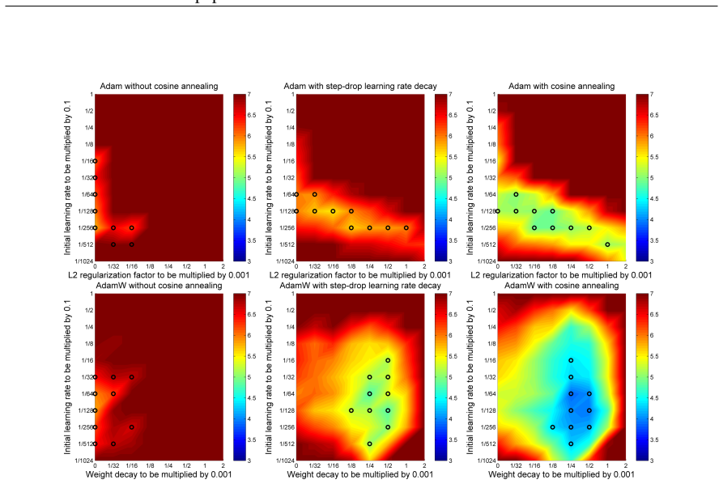
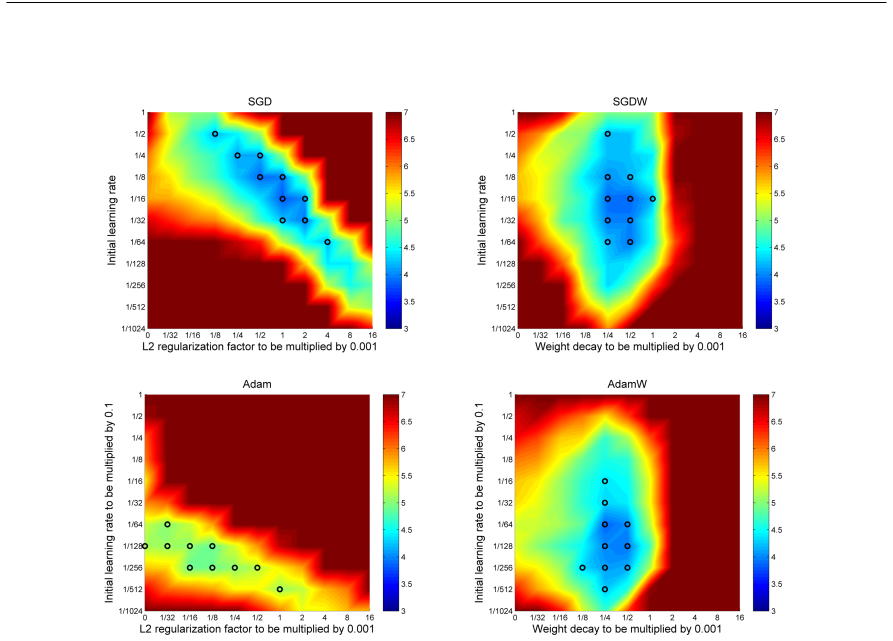
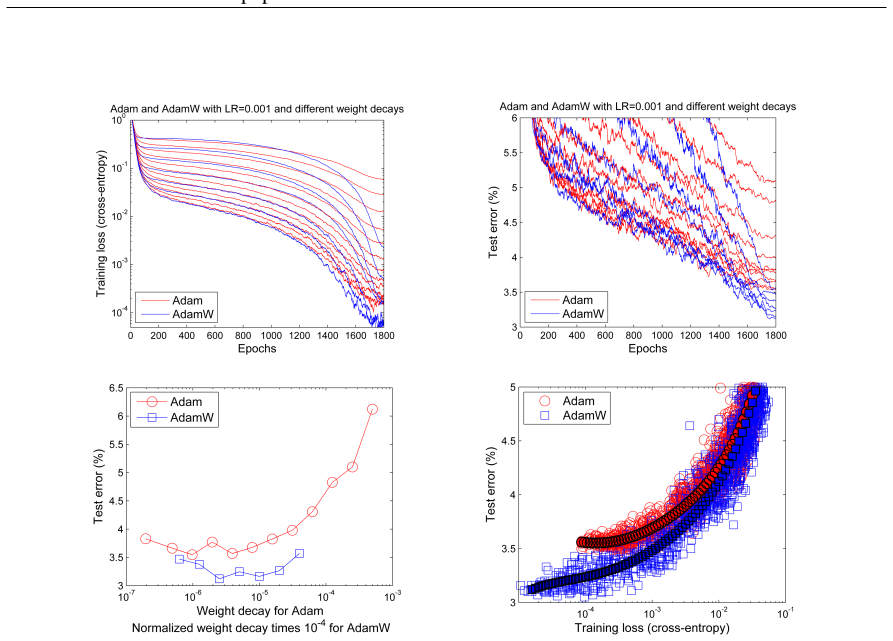
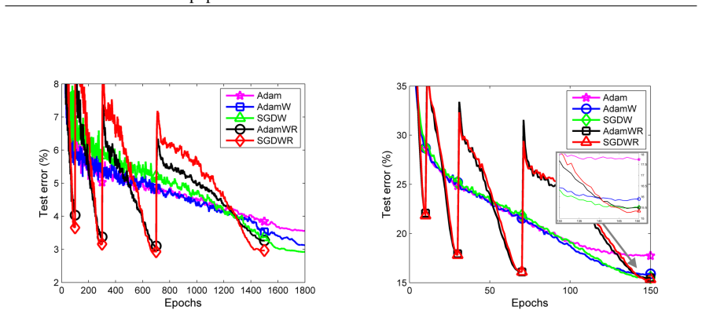

对于标准随机梯度下降（SGD），L2 正则化和权重衰减正则化是等价的（在按学习率重新缩放的意义上），但如我们所展示，对于 Adam 等自适应梯度算法，情况并非如此。虽然这些算法的常见实现采用 L2 正则化（由于我们所揭示的不等价性，常将其称为“权重衰减”可能具有误导性），我们提出一种简单修改：将权重衰减与相对于损失函数所采取的优化步骤解耦，从而恢复权重衰减正则化的原始表述。我们提供实证证据表明，所提出的修改 (i) 对于标准 SGD 和 Adam，都将权重衰减因子的最优选择与学习率设置解耦；(ii) 显著改善 Adam 的泛化性能，使其在图像分类数据集上能够与带动量的 SGD 竞争（此前 Adam 通常被后者超越）。我们提出的解耦权重衰减已被许多研究者采用，社区已在 TensorFlow 和 PyTorch 中实现；实验完整源代码见 https://github.com/loshchil/AdamW-and-SGDW。
自适应梯度方法，如 AdaGrad（Duchi et al., 2011）、RMSProp（Tieleman & Hinton, 2012）、Adam（Kingma & Ba, 2014）以及最近的 AMSGrad（Reddi et al., 2018），已成为训练前馈和循环神经网络的默认选择（Xu et al., 2015; Radford et al., 2015）。然而，CIFAR-10 和 CIFAR-100（Krizhevsky, 2009）等流行图像分类数据集的最先进结果仍然通过应用带动量的 SGD 获得（Gastaldi, 2017; Cubuk et al., 2018）。此外，Wilson et al. (2017) 表明，在图像分类、字符级语言建模和成分句法分析等多种深度学习任务上测试时，自适应梯度方法的泛化不如带动量的 SGD。人们研究了关于这种较差泛化起源的不同假设，例如尖锐局部最小值的存在（Keskar et al., 2016; Dinh et al., 2017）以及自适应梯度方法的固有问题（Wilson et al., 2017）。在本文中，我们研究使用 SGD 和 Adam 训练深度神经网络时，使用 L2 正则化还是权重衰减正则化更好。我们表明，最流行的自适应梯度方法 Adam 泛化较差的一个主要因素在于：L2 正则化对它的效果远不如对 SGD 那样有效。具体而言，我们对 Adam 的分析得出以下观察：
本文的主要贡献是通过将权重衰减与基于梯度的更新解耦来改善 Adam 中的正则化。在全面分析中，我们表明 Adam 使用解耦权重衰减时比使用 L2 正则化泛化得好得多，测试误差相对改善 15%（见图 2 和图 3）；这适用于各种图像识别数据集（CIFAR-10 和 ImageNet32x32）、训练预算（从 100 到 1800 个 epoch）和学习率计划（固定、阶梯下降和余弦退火；见图 1）。我们还证明，我们的解耦权重衰减使学习率和权重衰减因子的最优设置更加独立，从而简化超参数优化（见图 2）。
本文的主要动机是改进 Adam，使其即使在以前不具竞争力的那些问题上也能与带动量的 SGD 竞争。我们希望， practitioners 不再需要在 Adam 和 SGD 之间切换，从而减少选择数据集/任务特定训练算法及其超参数的常见问题。
在 Hanson & Pratt (1988) 描述的权重衰减中，权重 θ 按指数衰减：
其中 λ 定义每步权重衰减率，∇ft(θt) 是第 t 个批次梯度，乘以学习率 α。对于标准 SGD，它等价于标准 L2 正则化：
命题 1（标准 SGD 中权重衰减 = L2 正则化）。具有基础学习率 α 的标准 SGD 在带权重衰减 λ（定义见式 1）的批次损失函数 ft(θ) 上执行的步骤，与它在无权重衰减的 ftreg(θ) = ft(θ) + (λ/2)‖θ‖22 上执行的步骤相同，其中 λ′ = λ/α。
这一众所周知事实以及我们其他命题的证明见附录 A。
由于这种等价性，L2 正则化经常被称为权重衰减，包括在流行深度学习库中。然而，正如我们将在本节后面展示的，这种等价性对自适应梯度方法不成立。对于 SGD 的简单情况，一个常被忽视的事实是：为使等价性成立，L2 正则化器 λ′ 必须设为 λ/α，即如果存在整体最佳权重衰减值 λ，则 λ′ 的最佳值与学习率 α 紧密耦合。为了解耦这两个超参数的影响，我们提倡按照 Hanson & Pratt (1988)（式 1）解耦权重衰减步骤。
首先看 SGD 情况，我们提出在算法 1 第 9 行中，基于梯度信息更新 θt 的同时衰减权重。这得到我们提出的使用解耦权重衰减的带动量 SGD 变体（SGDW）。这种简单修改显式解耦 λ 和 α（尽管对任意两个超参数而言，当然可能仍存在一些问题相关的隐式耦合）。为了考虑 α 和 λ 的可能调度，我们引入由用户定义过程 SetScheduleMultiplier(t) 提供的缩放因子 ηt。
现在转向 Adam（Kingma & Ba, 2014）等自适应梯度算法，它们按梯度的历史幅度缩放梯度。直观上，当 Adam 在损失函数 f 加 L2 正则化上运行时，在 f 中倾向于具有大梯度的权重不会像使用解耦权重衰减时那样受到同样多的正则化，因为正则化器的梯度会与 f 的梯度一起被缩放。这导致自适应梯度算法中 L2 与解耦权重衰减正则化的不等价：
命题 2（自适应梯度中权重衰减 ≠ L2 正则化）。令 O 表示一个优化器，在无权重衰减的批次损失函数 ft(θ) 上运行时迭代为 θt+1 ← θt − α Mt∇ft(θt)，在带权重衰减的 ft(θ) 上运行时迭代为 θt+1 ← (1 − λ)θt − α Mt∇ft(θt)，其中 Mt ≠ kI（k ∈ ℝ）。那么，对于 O，不存在 L2 系数 λ′，使得在无权重衰减的批次损失 ftreg(θ) = ft(θ) + (λ′/2)‖θ‖22 上运行 O，等价于在带衰减 λ ∈ ℝ+ 的 ft(θ) 上运行 O。
我们在算法 2 第 12 行中解耦 Adam 的权重衰减和基于损失的梯度更新；这产生我们使用解耦权重衰减的 Adam 变体（AdamW）。
既然已经表明 L2 正则化和权重衰减正则化对自适应梯度算法不同，就产生了它们如何不同以及如何解释其效果的问题。它们对标准 SGD 的等价性仍非常有助于直觉：两种机制以相同速率将权重推向零。然而，对于自适应梯度算法，它们不同：使用 L2 正则化时，损失函数梯度和正则化器梯度（即权重的 L2 范数）之和被自适应调整；而使用解耦权重衰减时，只有损失函数梯度被自适应调整（权重衰减步骤与自适应梯度机制分离）。使用 L2 正则化时，两类梯度都按其典型（求和）幅度归一化，因此具有大典型梯度幅度 s 的权重 x 受到的正则化相对量小于其他权重。相反，解耦权重衰减以相同速率 λ 正则化所有权重，实际上比标准 L2 正则化更强地正则化具有大 s 的权重 x。我们针对固定预条件器的自适应梯度算法简单特例形式化展示这一点：
命题 3（固定预条件器自适应梯度算法中权重衰减 = 尺度调整的 L2 正则化）。令 O 表示与命题 2 中特征相同的算法，并使用固定预条件器矩阵 Mt = diag(s)−1（对所有 i 有 si > 0）。那么，具有基础学习率 α 的 O 在带权重衰减 λ 的批次损失函数 ft(θ) 上执行的步骤，与它在无权重衰减的尺度调整正则化批次损失上执行的步骤相同：
其中 ⊙ 和 √· 分别表示逐元素乘法和平方根，λ′ = λ/α。
我们注意到，该命题并不直接适用于实际自适应梯度算法，因为这些算法每一步都会改变预条件器矩阵。尽管如此，它仍能提供关于每一步被优化等价损失函数的直觉：具有大逆预条件器 si 的参数 θi（在实践中由第 i 维历史上较大的梯度引起）受到的正则化相对多于使用 L2 正则化时；具体而言，正则化与 √si 成正比。
算法 1 SGDW
1: 给定初始学习率 α ∈ R，动量因子 β1 ∈ R，权重衰减/L2 正则化因子 λ ∈ R
2: 初始化时间步 t ← 0，参数向量 θ_{t=0} ∈ R^n，一阶矩向量 m_{t=0} ← 0，调度乘子 η_{t=0} ∈ R
3: repeat
4: t ← t + 1
5: ∇f_t(θ_{t−1}) ← SelectBatch(θ_{t−1}) ▷ 选择批次并返回相应梯度
6: g_t ← ∇f_t(θ_{t−1})
7: η_t ← SetScheduleMultiplier(t) ▷ 可固定、衰减、用于热重启
8: m_t ← β1 m_{t−1} + η_t α g_t
9: θ_t ← θ_{t−1} − m_t − η_t λ θ_{t−1} ▷ 解耦权重衰减步骤
10: until 满足停止准则
11: return 优化后的参数 θ_t
算法 2 Adam（L2 正则化）与 AdamW（解耦权重衰减）
1: 给定 α = 0.001，β1 = 0.9，β2 = 0.999，ε = 10^−8，λ ∈ R
2: 初始化时间步 t ← 0，参数向量 θ_{t=0} ∈ R^n，一阶矩向量 m_{t=0} ← 0，二阶矩向量 ν_{t=0} ← 0，调度乘子 η_{t=0} ∈ R
3: repeat
4: t ← t + 1
5: ∇f_t(θ_{t−1}) ← SelectBatch(θ_{t−1}) ▷ 选择批次并返回相应梯度
6: g_t ← ∇f_t(θ_{t−1}) + λ θ_{t−1} ▷ L2 正则化；AdamW 则使用 g_t ← ∇f_t(θ_{t−1})
7: m_t ← β1 m_{t−1} + (1 − β1) g_t
8: ν_t ← β2 ν_{t−1} + (1 − β2) g_t^2
9: \hat{m}_t ← m_t / (1 − β1^t)
10: \hat{ν}_t ← ν_t / (1 − β2^t)
11: η_t ← SetScheduleMultiplier(t)
12: θ_t ← θ_{t−1} − η_t( α \hat{m}_t / (√\hat{ν}_t + ε) + λ θ_{t−1} )
13: until 满足停止准则
14: return 优化后的参数 θ_t
我们现在在 Aitchison (2018) 提出的自适应梯度算法统一理论的贝叶斯滤波框架中讨论解耦权重衰减的合理性。在我们把当前论文的初步版本发布到 arXiv 后，Aitchison 指出，他的理论“为我们提供了一个理论框架，在其中我们可以理解这种权重衰减优于 L2 正则化的原因，因为正是权重衰减，而不是 L2 正则化，通过贝叶斯滤波的直接应用而出现。”（Aitchison, 2018）。虽然该理论的全部功劳归 Aitchison，我们在此总结它，以阐明为什么权重衰减可能优于 L2 正则化。
Aitchison (2018) 将 n 个参数 θ1,…,θn 的随机优化视为贝叶斯滤波问题，目标是在给定时间步 t 其他参数当前值 θ−i(t) 的情况下，推断每个参数 θi 最优值上的分布。当其他参数不变时，这是一个优化问题；但当它们变化时，就变成使用贝叶斯滤波“跟踪”优化器的问题，如下所示。给定优化器在时间步 t 的概率分布 P(θt | y1:t)，它考虑来自前 t 个小批次的数据 y1:t；状态转移先验 P(θt+1 | θt)，反映该分布从一个步骤到下一步的（小）数据无关变化；以及由第 t+1 步小批次导出的似然 P(yt+1 | θt+1)。然后可以（如贝叶斯滤波中通常那样）通过对 θt 边缘化获得一步超前预测 P(θt+1 | y1:t)，再应用贝叶斯规则纳入似然 P(yt+1 | θt+1)，从而计算优化器在时间步 t+1 的后验分布 P(θt+1 | y1:t+1)。Aitchison (2018) 假设高斯状态转移分布 P(θt+1 | θt) 和近似共轭似然 P(yt+1 | θt+1)，得到滤波分布均值的以下闭式更新：
其中 g 是时间 t 小批次对数似然的梯度。该结果意味着梯度预条件器由滤波分布的后验不确定性 Σpost 给出：我们越不确定的参数更新越大，越确定的参数更新越小。Aitchison (2018) 进一步表明，Adam 和 RMSprop 等流行自适应梯度方法，以及 Kronecker 因子化方法，都是该框架的特例。
解耦权重衰减非常自然地作为状态转移分布的一部分融入这一统一框架：Aitchison (2018) 假设优化器根据以下高斯缓慢变化：
其中 Q 是权重高斯扰动的协方差，A 是防止值随时间无界增长的正则化器。当实例化为 A = λ × I 时，该正则化器 A 正好扮演式 1 描述的解耦权重衰减角色，因为这导致每一步将当前均值估计 θt 乘以 (1 − λ)。值得注意的是，这种正则化也直接应用于先验，并且不依赖于每个参数的不确定性（而 L2 正则化需要这种依赖）。
我们现在在各种训练预算和学习率计划下评估解耦权重衰减的性能。实验设置遵循 Gastaldi (2017)，他在 L2 正则化之外提出将新的 Shake-Shake 正则化应用于 3 分支残差 DNN，从而在 CIFAR-10 数据集（Krizhevsky, 2009）上达到 2.86% 的新最先进结果。我们使用基于 fb.resnet.torch1 的相同模型/源代码。我们始终使用批量大小 128，并对 CIFAR 数据集应用常规数据增强过程。基础网络是 26×64d ResNet（即网络深度 26，2 个残差分支，第一个残差块宽度 64）和 26×96d ResNet，分别有 11.6M 和 25.6M 参数。关于网络和 Shake-Shake 方法的详细描述，请参阅 Gastaldi (2017)。我们还在 ImageNet32x32 数据集（Chrabaszcz et al., 2017）上实验，这是原始 ImageNet 数据集的下采样版本，包含 120 万张 32×32 像素图像。
在第一个实验中，我们比较带 L2 正则化的 Adam 与带解耦权重衰减的 Adam（AdamW），使用三种不同学习率计划：固定学习率、阶梯下降计划和余弦退火计划（Loshchilov & Hutter, 2016）。由于 Adam 已经自适应调整其逐参数学习率，为其使用学习率乘子计划不如 SGD 常见，但我们的结果表明这种计划可以显著改善 Adam 性能，我们提倡不要忽视它们在自适应梯度算法中的使用。
对于每种学习率计划和权重衰减变体，我们使用不同初始学习率 α 和权重衰减因子 λ 设置，训练 2×64d ResNet 100 个 epoch。图 1 显示，解耦权重衰减在所有学习率计划下都优于 L2 正则化，且在学习率计划更好时差异更大。我们还注意到，解耦权重衰减导致更可分的超参数搜索空间，尤其是应用阶梯下降和余弦退火等学习率计划时。图还显示余弦退火明显优于其他学习率计划；因此我们在其余实验中使用余弦退火。

为了验证关于 α 和 λ 耦合的假设，图 2 比较 SGD（SGD vs. SGDW，顶行）和 Adam（Adam vs. AdamW，底行）中 L2 正则化与解耦权重衰减的性能。在 SGD（图 2 左上）中，L2 正则化未与学习率解耦（算法 1 描述的常见方式），图清楚显示最佳超参数设置盆地（由颜色表示，前 10 个超参数设置由黑圈表示）不与 x 轴或 y 轴对齐，而是位于对角线上。这表明两个超参数相互依赖，需要同时改变，而只改变其中一个可能大幅恶化结果。例如，考虑左上黑圈设置（α = 1/2，λ = 1/8 * 0.001）；只改变 α 或 λ 中一个会恶化结果，而同时改变二者仍可能带来明显改善。我们注意到，初始学习率和 L2 正则化因子的这种耦合可能促成了 SGD 对其超参数设置非常敏感的名声。
相反，图 2（右上）中 SGD 使用解耦权重衰减（SGDW）的结果表明，权重衰减和初始学习率被解耦。所提方法使两个超参数更可分：即使学习率尚未很好调优（例如图 2 右上中的 1/1024），保持其固定而只优化权重衰减因子也会得到良好值（1/4*0.001）。SGD 使用 L2 正则化时并非如此（见图 2 左上）。
Adam 使用 L2 正则化的结果见图 2（左下）。Adam 的最佳超参数设置明显差于 SGD 的最佳设置（比较图 2 左上）。虽然两种方法都使用 L2 正则化，但 Adam 完全没有从中受益：其非零 L2 正则化因子获得的最佳结果与 λ = 0 时（即无 L2 正则化）获得的最佳结果相当。与原始 SGD 类似，超参数景观的形状表明两个超参数耦合。
相反，我们新的 Adam 解耦权重衰减变体（AdamW）的结果见图 2（右下），表明 AdamW 在很大程度上解耦了权重衰减和学习率。最佳超参数设置的结果明显优于 Adam 使用 L2 正则化的最佳结果，并与 SGD 和 SGDW 的最佳结果相当。
总之，图 2 的结果支持我们的假设：权重衰减和学习率超参数可以解耦，这反过来简化了 SGD 的超参数调优问题，并将 Adam 的性能提高到可与带动量 SGD 竞争。

虽然之前的实验表明 AdamW 的最优超参数盆地比 Adam 更宽更深，我们接下来研究更长 1800 个 epoch 运行的结果，以比较 AdamW 和 Adam 的泛化能力。
我们将初始学习率固定为 0.001，这既是 Adam 的默认学习率，也是在我们实验中表现相当好的学习率。图 3 显示 Adam 的 12 个 L2 正则化设置和 AdamW 的 7 个归一化权重衰减设置的结果（归一化权重衰减表示附录 B.1 正式定义的重新缩放；它相当于一个取决于批次遍历次数的乘法因子）。有趣的是，虽然 Adam 和 AdamW 的学习曲线动态在训练前半段经常重合，但 AdamW 往往导致更低的训练损失和测试误差（分别见图 3 左上和右上）。重要的是，Adam 中使用 L2 权重衰减并未产生像 AdamW 中解耦权重衰减那样好的结果（另见图 3 左下）。接下来我们研究 AdamW 的更好结果仅由于更好收敛还是由于更好泛化。图 3（右下）中 Adam 和 AdamW 最佳设置的结果表明，AdamW 不仅产生更好的训练损失，而且在相似训练损失值下也产生更好的泛化性能。ImageNet32x32 上的结果（见附录 SuppFigure 4）得出相同结论：泛化性能显著改善。

为了改善 SGDW 和 AdamW 的 anytime 性能，我们用 Loshchilov & Hutter (2016) 引入的热重启扩展它们，分别得到 SGDWR 和 AdamWR（见附录 B.2）。如图 4 所示，AdamWR 在 CIFAR-10 和 ImageNet32x32 上大大加速 AdamW，最高达 10 倍（见第一次重启时的结果）。对于默认学习率 0.001，AdamW 相比 Adam 在 CIFAR-10（另见 SuppFigure 5）和 ImageNet32x32（另见 SuppFigure 6）上都取得 15% 的测试误差相对改善。
AdamWR 取得相同的改善结果，但 anytime 性能好得多。这些改进缩小了 CIFAR-10 上 Adam 与 SGDWR 之间的大部分差距，并在 ImageNet32x32 上产生可比性能。

其他几个研究组已在可引用工作中成功应用 AdamW。例如，Wang et al. (2018) 使用 AdamW 在标准 WIDER FACE 数据集（Yang et al., 2016）上训练一种新的人脸检测架构，相比先前最先进算法获得几乎快 10 倍的预测速度，同时达到可比性能。Volker et al. (2018) 使用带余弦退火的 AdamW 训练卷积神经网络，以分类和表征从颅内脑电图（EEG）记录中测量的错误相关脑信号。虽然他们的论文未提供与 Adam 的比较，但他们好心地为我们提供了在其表现最好的问题特定网络架构 Deep4Net 和 ResNet 变体上的直接比较。使用与 Adam 相同超参数设置的 AdamW 在 Deep4Net 上取得更高测试集准确率（73.68% 对 71.37%），在 ResNet 上取得统计显著更高的测试集准确率（72.04% 对 61.34%）。Radford et al. (2018) 使用 AdamW 训练 Transformer（Vaswani et al., 2017）架构，在广泛自然语言理解基准上取得新的最先进结果。Zhang et al. (2018) 在 CIFAR 数据集上使用 ResNet 和 VGG 架构，比较 SGD、Adam 和 Kronecker 因子化近似曲率（K-FAC）优化器（Martens & Grosse, 2015）的 L2 正则化与权重衰减，报告在二者不同的情况下，解耦权重衰减始终优于 L2 正则化。
在有人提出 Adam 等自适应梯度方法可能比带动量 SGD 泛化更差（Wilson et al., 2017）之后，我们发现并揭示了 Adam 中 L2 正则化与权重衰减的不等价性。我们实证表明，我们的 Adam 解耦权重衰减版本比常见的 Adam L2 正则化实现产生显著更好的泛化性能。我们还提出对 Adam 使用热重启以改善其 anytime 性能。
我们在图像分类数据集上获得的结果必须在更广泛任务上验证，尤其是那些预期正则化很重要的任务。将我们关于权重衰减的发现整合到其他试图改进 Adam 的方法中会很有趣，例如归一化方向保持 Adam（Zhang et al., 2017）。虽然我们将实验分析集中在 Adam 上，但我们相信类似结果也适用于其他自适应梯度方法，如 AdaGrad（Duchi et al., 2011）和 AMSGrad（Reddi et al., 2018）。
我们感谢 Patryk Chrabaszcz 帮助运行 ImageNet32x32 实验；Matthias Feurer 和 Robin Schirrmeister 在多个迭代中对本文提供宝贵反馈；以及 Martin Volker、Robin Schirrmeister 和 Tonio Ball 提供其 EEG 数据上 AdamW 与 Adam 的比较。我们还感谢以下深度学习社区成员在各种深度学习库中实现解耦权重衰减：
Jingwei Zhang、Lei Tai、Robin Schirrmeister 和 Kashif Rasul 在 PyTorch 中的实现（见 https://github.com/pytorch/pytorch/pull/4429）；Phil Jund 在 TensorFlow 中的实现，见 https://www.tensorflow.org/api_docs/python/tf/contrib/opt/DecoupledWeightDecayExtension；Sylvain Gugger、Anand Saha、Jeremy Howard 和 fast.ai 其他成员在 https://github.com/suguger/Adam-experiments 的实现；Guillaume Lambard 在 Keras 中的实现，见 https://github.com/GLambard/AdamW_Keras；Yagami Lin 在 Caffe 中的实现，见 https://github.com/Yagami123/Caffe-AdamW-AdamWR。
本工作得到欧洲研究理事会（ERC）在欧盟 Horizon 2020 研究与创新计划下的资助（资助号 716721），德国研究基金会（DFG）在 BrainLinks-BrainTools 卓越集群（资助号 EXC 1086）和资助号 INST 37/935-1 FUGG 下的资助，以及德国巴登-符腾堡州通过 bwHPC 的资助。
Laurence Aitchison. A unified theory of adaptive stochastic gradient descent as Bayesian filtering. arXiv:1507.02030, 2018.
Patryk Chrabaszcz, Ilya Loshchilov, and Frank Hutter. A downsampled variant of ImageNet as an alternative to the CIFAR datasets. arXiv:1707.08819, 2017.
Ekin D Cubuk, Barret Zoph, Dandelion Mane, Vijay Vasudevan, and Quoc V Le. Autoaugment: Learning augmentation policies from data. arXiv preprint arXiv:1805.09501, 2018.
Laurent Dinh, Razvan Pascanu, Samy Bengio, and Yoshua Bengio. Sharp minima can generalize for deep nets. arXiv:1703.04933, 2017.
John Duchi, Elad Hazan, and Yoram Singer. Adaptive subgradient methods for online learning and stochastic optimization. The Journal of Machine Learning Research, 12:2121–2159, 2011.
Xavier Gastaldi. Shake-Shake regularization. arXiv preprint arXiv:1705.07485, 2017.
Stephen José Hanson and Lorien Y Pratt. Comparing biases for minimal network construction with back-propagation. In Proceedings of the 1st International Conference on Neural Information Processing Systems, pp. 177–185, 1988.
Gao Huang, Yixuan Li, Geoff Pleiss, Zhuang Liu, John E Hopcroft, and Kilian Q Weinberger. Snapshot ensembles: Train 1, get m for free. arXiv:1704.00109, 2017.
Nitish Shirish Keskar, Dheevatsa Mudigere, Jorge Nocedal, Mikhail Smelyanskiy, and Ping Tak Peter Tang. On large-batch training for deep learning: Generalization gap and sharp minima. arXiv:1609.04836, 2016.
Diederik Kingma and Jimmy Ba. Adam: A method for stochastic optimization. arXiv:1412.6980, 2014.
Alex Krizhevsky. Learning multiple layers of features from tiny images. 2009.
Hao Li, Zheng Xu, Gavin Taylor, and Tom Goldstein. Visualizing the loss landscape of neural nets. arXiv preprint arXiv:1712.09913, 2017.
Ilya Loshchilov and Frank Hutter. SGDR: stochastic gradient descent with warm restarts. arXiv:1608.03983, 2016.
James Martens and Roger Grosse. Optimizing neural networks with kronecker-factored approximate curvature. In International conference on machine learning, pp. 2408–2417, 2015.
Alec Radford, Luke Metz, and Soumith Chintala. Unsupervised representation learning with deep convolutional generative adversarial networks. arXiv:1511.06434, 2015.
Alec Radford, Karthik Narasimhan, Tim Salimans, and Ilya Sutskever. Improving language understanding by generative pre-training. URL https://s3-us-west-2.amazonaws.com/openai-assets/research-covers/language-unsupervised/language_understanding_paper.pdf, 2018.
Sashank J. Reddi, Satyen Kale, and Sanjiv Kumar. On the convergence of adam and beyond. International Conference on Learning Representations, 2018.
Leslie N Smith. Cyclical learning rates for training neural networks. arXiv:1506.01186v3, 2016.
Tijmen Tieleman and Geoffrey Hinton. Lecture 6.5-rmsprop: Divide the gradient by a running average of its recent magnitude. COURSERA: Neural networks for machine learning, 4(2):26–31, 2012.
Ashish Vaswani, Noam Shazeer, Niki Parmar, Jakob Uszkoreit, Llion Jones, Aidan N Gomez, Lukasz Kaiser, and Illia Polosukhin. Attention is all you need. In Advances in Neural Information Processing Systems, pp. 5998–6008, 2017.
Martin Volker, Jiri Hammer, Robin T Schirrmeister, Joos Behncke, Lukas DJ Fiederer, Andreas Schulze-Bonhage, Petr Marusic, Wolfram Burgard, and Tonio Ball. Intracranial error detection via deep learning. arXiv preprint arXiv:1805.01667, 2018.
Jianfeng Wang, Ye Yuan, Gang Yu, and Sun Jian. Sface: An efficient network for face detection in large scale variations. arXiv preprint arXiv:1804.06559, 2018.
Ashia C Wilson, Rebecca Roelofs, Mitchell Stern, Nathan Srebro, and Benjamin Recht. The marginal value of adaptive gradient methods in machine learning. arXiv:1705.08292, 2017.
Kelvin Xu, Jimmy Ba, Ryan Kiros, Kyunghyun Cho, Aaron Courville, Ruslan Salakhudinov, Rich Zemel, and Yoshua Bengio. Show, attend and tell: Neural image caption generation with visual attention. In International Conference on Machine Learning, pp. 2048–2057, 2015.
Shuo Yang, Ping Luo, Chen-Change Loy, and Xiaoou Tang. Wider face: A face detection benchmark. In Proceedings of the IEEE Conference on Computer Vision and Pattern Recognition, pp. 5525–5533, 2016.
Guodong Zhang, Chaoqi Wang, Bowen Xu, and Roger Grosse. Three mechanisms of weight decay regularization. arXiv preprint arXiv:1810.12281, 2018.
Zijun Zhang, Lin Ma, Zongpeng Li, and Chuan Wu. Normalized direction-preserving adam. arXiv:1709.04546, 2017.
Barret Zoph, Vijay Vasudevan, Jonathon Shlens, and Quoc V. Le. Learning transferable architectures for scalable image recognition. In arXiv:1707.07012 [cs.CV], 2017.
这一众所周知事实的证明很直接。无权重衰减的 SGD 在 ftreg(θ) = ft(θ) + (λ′/2)‖θ‖22 上具有以下迭代：
带权重衰减的 SGD 在 ft(θ) 上具有以下迭代：
由于 λ′ = λ/α，这些迭代完全相同。
与命题 1 的证明类似，O 在无权重衰减的 ftreg(θ) = ft(θ) + (1/2)λ′‖θ‖22 上的迭代，以及 O 在带权重衰减 λ 的 ft 上的迭代分别为：
这些迭代对所有 θt 相等将意味着 λθt = αλ′Mtθt。这仅当 Mt = kI（k ∈ ℝ）时对所有 θt 成立，而 O 并非如此。因此，不存在 L2 正则化器 λ′‖θ‖22 能使迭代等价。
无权重衰减的 O 在 ftreg(θ) = ft(θ) + (λ′/2)‖θ ⊙ √s‖22 上具有以下迭代：
其中除以 s 是逐元素的。带权重衰减的 O 在 ft(θ) 上具有以下迭代：
由于 λ′ = λ/α，这些迭代完全相同。
在讨论了用于改善 Adam 泛化的解耦权重衰减之后，本节介绍两个额外组件，以在实践中改善 Adam 性能。
我们的初步实验表明，不同的权重衰减因子对于不同计算预算（以批次遍历次数定义）是最优的。相关地，Li et al. (2017) 证明较小批量（相同总 epoch 数）会使权重衰减的收缩效应更明显。这里，我们提出通过归一化权重衰减值来减少这种依赖。具体而言，我们将超参数 λ 替换为新的（更稳健的）归一化权重衰减超参数 λnorm，并用它设置 λ 为 λ = λnorm√(b/(BT))，其中 b 是批量大小，B 是训练点总数，T 是总 epoch 数。因此，λnorm 可以解释为如果只允许一次批次遍历时使用的权重衰减。我们强调，我们的归一化选择只是基于少量实验的一种可能性；我们得出的更持久结论是，使用某种归一化可以显著改善结果。
我们现在按照我们最近的工作（Loshchilov & Hutter, 2016）将余弦退火和热重启应用于 Adam。在那里，我们提出带热重启的随机梯度下降（SGDR），通过按余弦计划快速冷却学习率并周期性增加它，来改善 SGD 的 anytime 性能。SGDR 已被成功采用，为流行图像分类基准带来新的最先进结果（Huang et al., 2017; Gastaldi, 2017; Zoph et al., 2017），因此我们在提出它后不久就尝试将其扩展到 Adam。然而，虽然我们最初的带热重启 Adam 版本比 Adam 具有更好的 anytime 性能，但它无法与带热重启的 SGD 竞争，正是因为 L2 正则化不如在 SGD 中那样有效。现在，通过原始权重衰减正则化（第 2 节）并引入归一化权重衰减（第 B.1 节）解决了这个问题，我们原先关于余弦退火和热重启的工作可以直接扩展到 Adam。
为使表述自包含，我们简要描述 SGDR 如何调度有效学习率的变化以加速 DNN 训练。这里，我们解耦初始学习率 α 及其乘子 ηt，后者用于获得迭代 t 的实际学习率（例如见算法 1 第 8 行）。在 SGDR 中，一旦执行 Ti 个 epoch，我们模拟一次新的热启动 SGD 运行/重启，其中 i 是运行索引。重要的是，重启不是从头执行，而是通过增加 ηt 来模拟，同时使用旧值 θt 作为初始解。ηt 增加的量控制先前获得的信息（例如动量）被使用的程度。在第 i 次运行内，ηt 的值按余弦退火（Loshchilov & Hutter, 2016）学习率对每个批次衰减如下：
其中 ηmin(i) 和 ηmax(i) 是乘子的范围，Tcur 表示自上次重启以来已执行的 epoch 数。Tcur 在每个批次迭代 t 更新，因此不限于整数值。在每个第 i 次重启时调整（例如减小）ηmin(i) 和 ηmax(i)（另见 Smith (2016)）可能改善性能，但我们在此不考虑该选项，因为它会引入额外超参数。对于 ηmax(i) = 1 和 ηmin(i) = 0，可将式 (14) 简化为
为获得良好 anytime 性能，可以从初始较小的 Ti（例如预期总预算的 1% 到 10%）开始，并在每次重启时乘以因子 Tmult（例如 Tmult = 2）。当 Tcur = Ti 时触发第 (i+1) 次重启，将 Tcur 设为 0。调度乘子的示例设置见 C。
我们提出的 AdamWR 算法表示 AdamW（见算法 2），其中 ηt 遵循式 (15)，λ 在每次迭代使用第 B.1 节描述的归一化权重衰减计算。我们注意到，归一化权重衰减使我们能够在 AdamWR 和 SGDRW（带热重启的 SGDR）中短运行和长运行使用恒定参数设置。
SuppFigure 1 给出调度乘子 ηt 的示例计划，Ti=0 = 100，Tmult = 2。初始 100 个 epoch 后，学习率将达到 0，因为 ηt=100 = 0。然后，由于 Tcur = Ti=0，我们通过重置 Tcur = 0 重启，由于式 (15)，乘子 ηt 被重置为 1。该乘子随后再次从 1 降到 0，但现在是在 200 个 epoch 内，因为 Ti=1 = Ti=0Tmult = 200。在重启前（ηt = 0 时，例如 SuppFigure 1 所示的 epoch 索引 100、300、700 和 1500）获得的解被优化器推荐为解，较新的解优先。
我们研究了使用更长运行（1800 个 epoch）的“标准 Adam”（带 L2 正则化和固定学习率的 Adam）是否使余弦退火变得不必要。SuppFigure 2 显示标准 Adam 在 4×4 对数超参数网格上的结果（网格粗糙是由于 1800 epoch 运行计算开销高）。即使考虑网格低分辨率，结果最多也与 AdamW 用少 18 倍 epoch 和更小网络获得的结果相当（见 SuppFigure 3 顶行中图）。鉴于正文图 1（既展示使用余弦退火等学习率计划可能的改进，也展示解耦权重衰减的有效性），这些结果并不十分令人惊讶。
我们使用 Adam 和 SGD 的实验结果表明，以 epoch 数表示的总运行时间影响最优超参数盆地（见 SuppFigure 3）。更具体地说，总 epoch 数越大，权重衰减值应越小。SuppFigure 4 表明，我们对该问题的补救——式 (15) 定义的归一化权重衰减——简化了超参数选择，因为短运行观察到的最优值与长得多运行的最优值相似。我们使用 CIFAR-10 上的初步实验提出式 (15) 中的平方根归一化，并在 ImageNet32x32 数据集（Chrabaszcz et al., 2017）上复核这不是巧合；该数据集是原始 ImageNet 的下采样版本，包含 120 万张 32×32 像素图像，一个 epoch 比 CIFAR-10 长 24 倍。该实验也支持平方根缩放：在 CIFAR-10 上观察到的最佳归一化权重衰减值几乎是 ImageNet32x32 的最优值（见 SuppFigure 3）。相反，如果我们在 ImageNet32x32 上使用与 CIFAR-10 相同的原始权重衰减值 λ，且 epoch 数相同而不使用所提归一化，则 λ 对 ImageNet32x32 会大约大 5 倍，导致性能差得多。最佳归一化权重衰减值也非常相似（例如 SGDW 和 AdamW 中 λnorm = 0.025 和 λnorm = 0.05）。这些结果清楚表明，归一化权重衰减可以显著改善性能；虽然平方根缩放在我们的实验中表现很好，但我们强调这些实验并不十分全面，甚至更好的缩放规则很可能存在。
SuppFigure 4 对应正文图 3，但用于 ImageNet32x32 而非 CIFAR-10。定性结果相同：权重衰减比 L2 正则化带来更好的训练损失（交叉熵），并带来更大的测试误差改善。
SuppFigure 5 和 SuppFigure 6 对应正文图 4，但在底行补充了训练损失曲线。结果表明，Adam 及其解耦权重衰减变体在 CIFAR-10 上收敛更快（按训练损失），比相应的 SGD 变体（ImageNet32x32 差异很小）。正如正文所讨论，当考虑相同训练损失值时，AdamW 的测试误差优于 Adam。有趣的是，SuppFigure 5 和 SuppFigure 6 显示，重启变体 AdamWR 和 SGDWR 也分别比 AdamW 和 SGDW 表现出更好的泛化。
说明：本文档为所提供 PDF 内容的中文翻译版；参考文献保留英文原样。原文图已按英文本裁切嵌入。原文算法 1、算法 2 及部分公式存在 OCR 错位，已按论文上下文整理为可读形式；附录中少量 OCR 噪声行已忽略。原文表/图编号按正文保留。